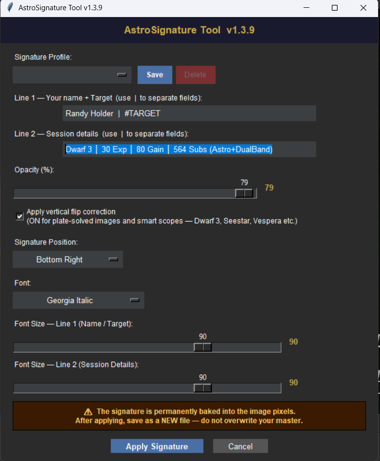

See it in Siril
From the Scripts menu to the finished image.



A free, text-based signature tool for Siril. Type your name, target, and session details straight into your processed image — no signature image file, no extra software.
Everything you need to sign an image, nothing you don't.
Name and target on Line 1, session details on Line 2 — typed fresh each time.
Top, middle, or bottom, crossed with left, center, or right — pick from a dropdown.
Curated system fonts with independent size sliders for each line, 12–120pt.
A 10–80% opacity slider plus a subtle drop shadow, readable on any background.
Handles plate-solved images and smart-scope orientation — Dwarf 3, Seestar, Vespera.
Save settings as named presets and switch between them — new in v1.3.9.
From the Scripts menu to the finished image.

What's changed recently.
The dialog now remembers its width and height between sessions — resize it once and it stays that way, whether you apply, cancel, or just close the window.
Save your settings as named presets and switch between them from a new dropdown — save, load, and delete profiles as needed. A non-deletable Default profile is always available. Requested by a user in the Siril community.
Your last-used values are now saved automatically and restored the next time you open the tool.
| v1.3.7 | Resizable dialog — fixed window clipping on high-DPI displays and systems with larger UI fonts. |
| v1.3.6 | Friendlier default field placeholders for first-time users. |
| v1.3.5 | GUI version label corrected; default fields restored. |
| v1.3.4 | Fixed blank output for TIFF inputs; smart pipeline handles all common layouts and bit depths automatically. |
| v1.3.3 | Fixed 8-bit JPEG write-back. |
| v1.3.2 | Preserved source bit depth for FITS, 16-bit TIFF, and 8-bit JPEG/TIFF. |
| v1.3.1 | Cross-platform font support — Windows, macOS, Linux. |
| v1.3.0 | Independent font size sliders for each line. |
| v1.2.0 | Font selection dropdown. |
| v1.1.0 | 9-position grid selector. |
| v1.0.0 | Initial release — two-line signature with flip correction. |
New here, or updating an existing install — everything you need is below.
Requires Siril 1.4.2+ and Python 3.9+. Pillow and numpy install automatically on first run.
Get notified when a new version ships — pick whichever fits you.
Another project built for the astrophotography community.
Where else to follow along.